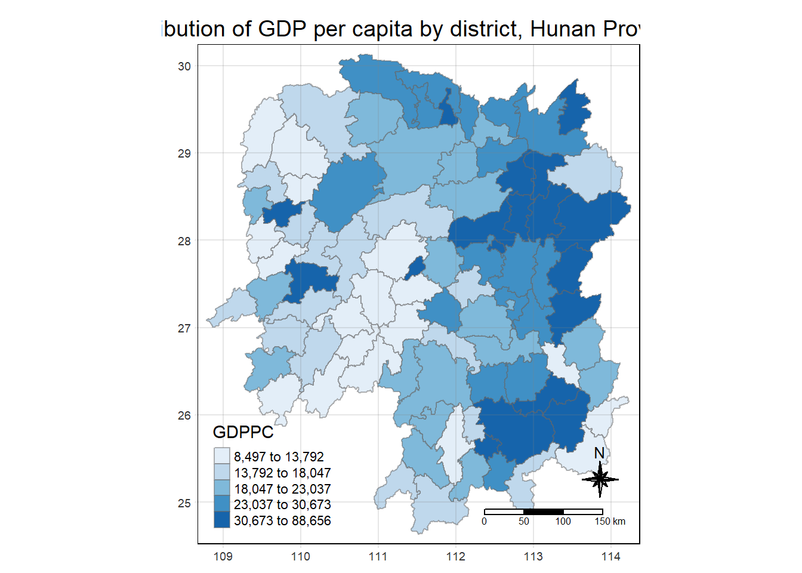
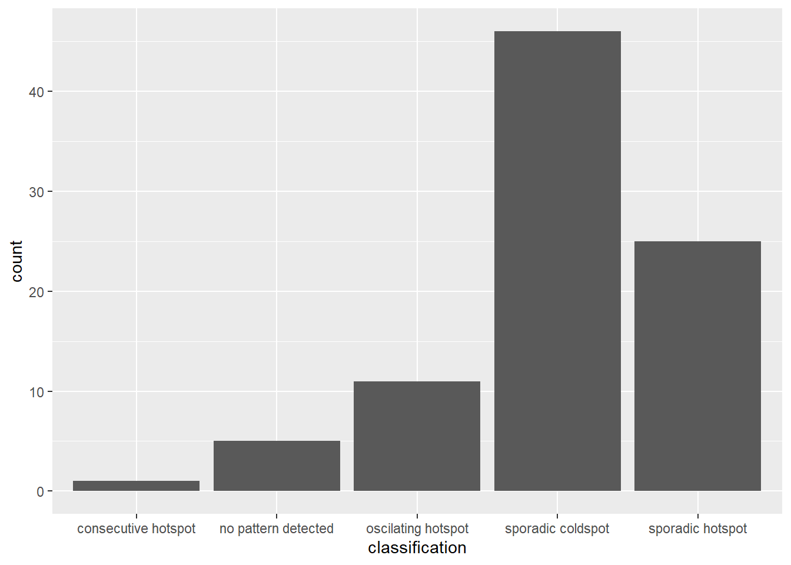
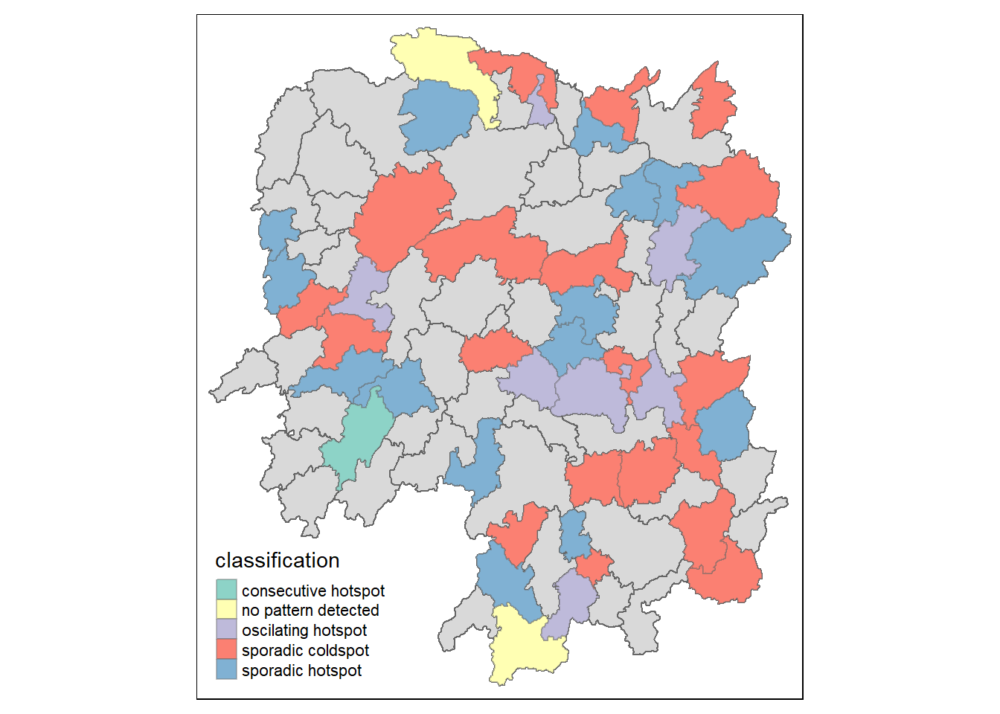

#loading in the library
pacman:: p_load(sf, tmap, sfdep, tidyverse, knitr)In-Class Exercise 2: SIM
Setting it up
First is to load in the Packages
Own Notes:
- sf is the package we used to import/export/handles spatial data in tdf format
- sfdep is going to replace spdep (we used in HOE2), and also to use to create space-time cube / emerging hotspot analysis
- tmap: mapping package to create thematic map
- tidyverse (concept/framework, this is modular form which can be easily updated) is family of R packages to design R packages conform with tibble dataframe.Therefore tidyverse allow reading and usages of packages using a conformed packages
- knitr: help with creating static html table instead of writing own tab for html table.
Next is to import Data:
hunan <- st_read(dsn="data/geospatial",
layer="Hunan")Reading layer `Hunan' from data source
`C:\cftoh\ISSS624\In-class_Ex\In-class_Ex2\data\geospatial'
using driver `ESRI Shapefile'
Simple feature collection with 88 features and 7 fields
Geometry type: POLYGON
Dimension: XY
Bounding box: xmin: 108.7831 ymin: 24.6342 xmax: 114.2544 ymax: 30.12812
Geodetic CRS: WGS 84CDPPC <- read_csv("data/aspatial/Hunan_2012.csv")
#non-spatial data with no geometry featuresCombining both data, to join spatial and non-spatial, we can retain the geometry so output will be in simple feature :
hunan_GDPPC <- left_join(hunan,CDPPC) %>%
select(1:4,7,15)Plotting a choropleth map
tmap_mode("plot")
tm_shape(hunan_GDPPC) +
tm_fill("GDPPC",
style = "quantile",
palette = "Blues",
title = "GDPPC") +
tm_borders(alpha = 0.5) +
tm_layout(main.title = "Distribution of GDP per capita by district, Hunan Province",
main.title.position = "center",
main.title.size = 1.2,
legend.height = 0.45,
legend.width = 0.35,
frame = TRUE) +
tm_compass(type="8star", size = 2) +
tm_scale_bar() +
tm_grid(alpha =0.2)
Deriving Contiguity Spatial Weights
Since it is Tibble comparable, we can do
wm_q <- hunan_GDPPC %>% #st_contiguity will calculate the neighbours
mutate(nb = st_contiguity(geometry), #mutate is dplyr function, a wrapper which wrap output back
wt = st_weights(nb, #take the nb to compute
style = "W"),
.before = 1) #put the nb and wt into first two column infront
#this added the data into input (hunan_GDPPC) which initially got 7 variables, now 9.
#**This is a main different for st way of doing things! Notice that st_weights() provides three arguments.
Distance-based Weights
Measure Global and Local Autocorrelation
Computing Global Moran’s I test:
# this is just FYI for GLOBAL, an old way not following the tibble form. DONT DO THIS.}
moranI <- global_moran(wm_q$GDPPC,
wm_q$nb,
wm_q$wt)set.seed(1234)
global_moran_perm(wm_q$GDPPC,
wm_q$nb,
wm_q$wt,
nsim = 99)
Monte-Carlo simulation of Moran I
data: x
weights: listw
number of simulations + 1: 100
statistic = 0.30075, observed rank = 100, p-value < 2.2e-16
alternative hypothesis: two.sided#In practice, monte carlo simulation should be used to perform the statistical test. For sfdep, it is supported by globel_moran_perm()
#It is always a good practice to use set.seed() before performing simulation. This is to ensure that the computation is reproducible.Computing local Moran’s I
#IMPORTANT
lisa <- wm_q %>%
mutate(local_moran = local_moran(
GDPPC, nb, wt, nsim =99),
.before=1) %>%
unnest(local_moran) # will need to unnest becasue there are many columns stored in list (group table), which cannot be seen until we unnest and add them as column. else there will all be in one column.
#we dont need to join table as well since all using same dfOwn Notes: The output of local_moran() is a sf data frame containing the columns ii, eii, var_ii, z_ii, p_ii, p_ii_sim and p_folded_sim. Note the p_ii and p…. stuff are all stimulated one the permutation.
The highhigh/lowlow value we should use median instead of mean, for handling of data that is highligh skewed.
We need to just decided if we are using mean or median. Deciding factor is how distributed is our data, and skewed distribution may cause bias-ness if we use mean.
The output of local_moran() is a sf data.frame containing the columns ii, eii, var_ii, z_ii, p_ii, p_ii_sim, and p_folded_sim.
ii: local moran statistic
eii: expectation of local moran statistic; for localmoran_permthe permutation sample means
var_ii: variance of local moran statistic; for localmoran_permthe permutation sample standard deviations
z_ii: standard deviate of local moran statistic; for localmoran_perm based on permutation sample means and standard deviations p_ii: p-value of local moran statistic using pnorm(); for localmoran_perm using standard deviatse based on permutation sample means and standard deviations p_ii_sim: For
localmoran_perm(),rank()andpunif()of observed statistic rank for [0, 1] p-values usingalternative=-p_folded_sim: the simulation folded [0, 0.5] range ranked p-value (based on https://github.com/pysal/esda/blob/4a63e0b5df1e754b17b5f1205b cadcbecc5e061/esda/crand.py#L211-L213)skewness: For
localmoran_perm, the output of e1071::skewness() for the permutation samples underlying the standard deviateskurtosis: For
localmoran_perm, the output of e1071::kurtosis() for the permutation samples underlying the standard deviates.
Visuaising local Moran’s I and p-value
tmap_mode("plot")
map1 <- tm_shape(lisa) +
tm_fill("ii") +
tm_borders(alpha = 0.5) +
tm_view(set.zoom.limits = c(6,8)) +
tm_layout(main.title = "local Moran's I of GDPPC",
main.title.size = 0.8)
map2 <- tm_shape(lisa) +
tm_fill("p_ii",
breaks = c(0, 0.001, 0.01, 0.05, 1),
labels = c("0.001", "0.01", "0.05", "Not sig")) +
tm_borders(alpha = 0.5) +
tm_layout(main.title = "p-value of local Moran's I",
main.title.size = 0.8)
tmap_arrange(map1, map2, ncol = 2)
Visualising LISA map
LISA map is a categorical map showing outliers and clusters. There are two types of outliers namely: High-Low and Low-High outliers. Likewise, there are two type of clusters namely: High-High and Low-Low cluaters. In fact, LISA map is an interpreted map by combining local Moran’s I of geographical areas and their respective p-values.
In lisa sf data.frame, we can find three fields contain the LISA categories. They are mean, median and pysal. In general, classification in mean will be used as shown in the code chunk below.
lisa_sig <- lisa %>%
filter(p_ii < 0.05)
tmap_mode("plot")
tm_shape(lisa) +
tm_polygons() +
tm_borders(alpha = 0.5) +
tm_shape(lisa_sig) +
tm_fill("mean") +
tm_borders(alpha = 0.4)
Emerging Hotspot Analysis EHSA
- this requires a time-series data
pacman:: p_load(plotly,zoo,Kendall)
#plotly will make the graph interactive, esp if we want to review details of it.GDPPC <- read_csv("data/aspatial/Hunan_GDPPC.csv")
#however note that Year is not in Year normal but is number format. To have space time cube we need to have time, spatial data, and attribute. Minimally the 3 columns.Creating a Time Series Cube
GDPPC_st <- spacetime(GDPPC, hunan,
.loc_col = "County",
.time_col = "Year")Next, is_spacetime_cube() of sfdep will be used to verify, and to check whether we done it properly.
is_spacetime_cube(GDPPC_st)[1] TRUEComputing Gi stats, first create a spatial weight matrix
GDPPC_nb <- GDPPC_st %>%
activate("geometry")%>% #need this to run through every time period, each time period will take out the geometry and calculate.
#mutate() of dplyr package is used to create two new columns nb and wt
mutate(nb = include_self(st_contiguity(geometry)),
wt = st_inverse_distance(nb, geometry,
scale = 1,
alpha = 1),
.before = 1) %>%
set_nbs ("nb") %>%
set_wts ("wt")
#Then we will activate the data context again and copy over the nb and wt columns to each time-slice using set_nbs() and set_wts()Computing Gi*
gi_stars <- GDPPC_nb %>%
group_by(Year) %>% #so we analyse year by year
mutate(gi_star = local_gstar_perm(
GDPPC, nb, wt)) %>% #the nb and wt is from GDPPC_nb table
tidyr::unnest(gi_star)cbg <- gi_stars %>%
ungroup() %>%
filter(County == "Changsha") |> select(County, Year, gi_star)Normal plot using:
ggplot(data = cbg,
aes(x = Year,
y = gi_star)) +
geom_line() +
theme_light()
Interactive Plot using:
p <- ggplot(data = cbg,
aes(x = Year,
y = gi_star)) +
geom_line() +
theme_light()
ggplotly(p)cbg %>%
summarise(mk = list(
unclass(
Kendall::MannKendall(gi_star)))) %>%
tidyr::unnest_wider(mk)# A tibble: 1 × 5
tau sl S D varS
<dbl> <dbl> <dbl> <dbl> <dbl>
1 0.485 0.00742 66 136. 589.In the above result, sl is the p-value. This result tells us that there is a slight upward but insignificant trend.
We can replicate this for each location by using group_by() of dplyr package.
ehsa <- gi_stars %>%
group_by(County) %>%
summarise(mk = list(
unclass(
Kendall::MannKendall(gi_star)))) %>%
tidyr::unnest_wider(mk)Arrange to show significant emerging hot/cold spots
emerging <- ehsa %>%
arrange(sl, abs(tau)) %>%
slice(1:5)Performing emerging hotspot analysis
ehsa <- emerging_hotspot_analysis(
x = GDPPC_st,
.var = "GDPPC",
k = 1,
nsim = 99
)
#we got 88 columns coz we have 10 years data to find pattern
#note the pvalue in the ehsa is the permutation
#the classification tell you which hot/ cold spot it belongs toggplot(data = ehsa,
aes(x = classification)) +
geom_bar()
Visualizing
hunan_ehsa <- hunan %>%
left_join(ehsa,
by = join_by(County == location))ehsa_sig <- hunan_ehsa %>%
filter(p_value <0.05) # we filter away the pvalue less than 0.05 to sieve out those that are not
tmap_mode("plot")
tm_shape(hunan_ehsa) +
tm_polygons() +
tm_borders(alpha = 0.5) +
tm_shape(ehsa_sig) +
tm_fill("classification") +
tm_borders(alpha = 0.4)
Note of Take-Home Exercixe 1: to think what we what to do, dont need to do everything. No need for all!!! When i see orphans then know contiguity shouldnt be used anymore. LISA - just need to do local moran I no need G and Gi. This will help to detect the highhigh / highlow. For EHSA, just need G*i stats and etc.
Own In-class Notes
sfdep is relatively new, to provide tidyverse data. This is only released 2 years ago or so.
Note: in HOE, we have to use sfdep instead of spdep (working with sp object)
We want to see how it evolves, changes from one package to another.
In-class notes:
- Attribute Data with dependency, first thing we should check if they are normally distributed.
- next we will do plot, then statistical test, and check if it is statistically sound, whether ND or not. In a non-geospatial context.
- When come to geospatial context, the normality + assumptions are not so much focused on.. Rather we focus on SPATIAL RANDOMNESS!! This is different. Non-spatial analysis we always presume or assume the space is constant. Spatial randomness is more of what we observed in space is randomly distributed. This is like normally assumption, we assume thye are ND but in reality it is unlikely due to various external factors.
- why is this important, coz distribution of population -> some areas more people some less. The composition can also be affected by economic structure. Hence high chance they are not randomly distributed. We want to check if a particular spatial is not randomly distribution, then we want to find out which area has highest concentration of crime / economic / electricity consumption. Once we identified it we want to find out what are the reasons behind, coz this world is not equal, no equality. Aim is to see spatial inequality -> Tobler first law of Geography.
- To measure spatial randomness we need to define spatial context. The prof introduced spatial weights to define and understand spatial context. General there are two types, one is adjacent (geographically next to each other, sharing a boundry) one is distance-based (e.g. within distance of 1km, then the two will be defined as neighbor). - we have these two coz some real world neighbors may not have shared boundary, therefore cannot do th adjacent criteria, but if has distance it will be on distance matrix. Useful example will be on this TOE: To use hexagon method, we can see that if island or stand alone, in SG before entering the causeway it will be standalone. we will see that adjacent criteria is not helpful anymore.
- For the distance weight matrices, in reality we want to see relative strength not just 1 and 0 binary way to construct weight matrix. we use inverse distance, to give a neighbor nearer to us a higher weightage than the further ones.
Planning sub zone, some is so big, but only a small busstop.
Vairous shapes, some are long, it will affect the way we select the neighbour. Hence we use the heaxagen method to overcome it, it is a modified area unit to make it regular, to overcome the odd shape problems so we are more precise to catch the busstop.
Mathematically there are two contiguity, Rooks (complete share boundry) and Queen’s (include point sharing)
Lag 1: is immediate neighbour
Lag 2: combination of both the immediate neighbour + the next round of neighbour (sometimes we want to do this to see when the cluster / neighbour effect subside) - correlogram in HOE (how economic influence by neighbours)
For weight matrix, we dont do complete standardization, we only do row or column standardization. The typical one is always Binary, only zero and one but some areas got more neighbours than the others, if we represent all as one will create bias. Therefore we do standarization, each geogrpahical area and find out the stanadrization, coz matrix is diagonal and symetric we do row or column standarize will give the same result. We try not to use binary unless very good reason.
Weighted - sum of each neighbour * weight
if want fast food chain (pizza hut), if i place an outlet here what is the service, delivery to make it warm,, only can keep the food within xxx mins. This is a powerful way to do markket penetration, frachisie usefully do this to promote their brand names to customers, identify each neighbour then find out which give highest market share, look into real estate to put outlet there, then compare sales.
Global v.s. Local
The global is more fo mathematically infomred
e.g. Hunan (HOE) - certain area has highest GDP per capital than others. In general (except Indo) most country only publish data in conti level. e.g. one boundry within got a few villages but they publisha s one conti. We look at the GDPPC, some clustering with realtively high, and some odd places with only a highly concentrated GDPPC surroudnd by realtively low. This is somethin the development centre is looking to devleop, they are more of place with potential. Now we want to see if any sign of clustering, any spatial randomness, to do that we will look into Spatial Autocorrlation (instead of Spatial dependency, in math, is more of for interpolation, for the whole country e.g. for oil reservoir discovery and gold mine). Spatial autocorrelation, we only have one variable which we willl compare the observed target itself and its neighbour. This is similar to correlation coefficient. This will allow testing how correlated, if yes then clustering, else if not. Spatial autocorrelation attempt to reject spatial hypothesis of NULL. Negative spatial autocorrelation means it has got a pattern although no cluster. or have a low value (outlier) surrounded by few high value, gaps, checkerbox. Positive autocorrelation we tend to see lump / clusters.
Few ways to callibrate, Moran I and Garey C.
We tend not to rely on raw data but using Monte carlo stimulation, do stimulation to cover it. Analysis we should ideallity (TOE) just go for permutation, can skip the basic statsics. In spatial data we should go just for permutation method!!
Local - 2 families, first is LISA, to identify 4 different groups, high/low outlier, highhigh/lowlow clusters. To check indead is outlier or clusters.
Local Moran I, will divide it. 4 quardrant. Once we found out we still need to test the statistical significance. we jsut want to highligh the statistically significance (e.g. not enough neighbour (data bias) or have enough neighbour but not statically significance)
Gi statistics (not Gery!) - the weight matrix MUST always be distance-based. While for moran and gery can be for both distance and approx-based. Gi stats is aimed to be more precise. Two versions, one is Gi (does not count itself, exclude itself in calculation) and one is G*i (does not include itself).
Emerging Hot Spot Analysis (EHSA) - this comes into place when we have timeseries data, e.g. the GDPPC. Every year will publish, hence we can see annual data in time series, to further analyse how things change or evolve overtime.
Man-Kendall test - typical stats method to see if certain phenomena change over time. No need to cconfirm if normally distrubuted or not. The sign statistics (The Hypothesis), compare value at time j and value at time k. If time j - time k > 0 then is 1 (my reference value is higher). The data has to be continuous. if dont have we will put in 0 and minus away. This is however non-spatial.
EHSA is for spatial way, we substitute G*i statistics and sub it as time j (my reference value). this will then categorize them into hot / cold spot (using Gi stats), while the Time series allow us to determine pattern of increasing / decreasing.
To do that we need to trasnform data into Spacetime Cubes (x,y, value (attribute), timeseries) - hence we need sfped which allow use to reform our data into Spacial time cube.
{#TOE1: some missing e.g. central catchment area etc all missing coz we drop it NA already to compute moren I (must exclude all these analysis)}